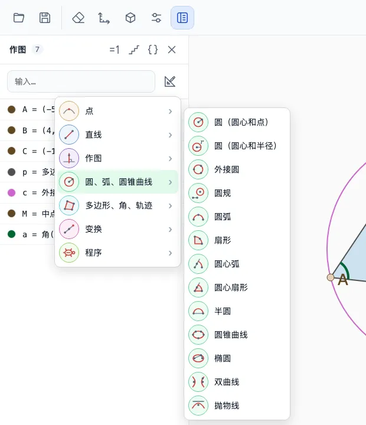

工具菜单

用法
- 输入行右侧的打开菜单：与工具环相同的工具族，颜色和顺序都一样，悬停或点按时显示其中的工具。
- 菜单包含工具环的全部工具以及更多工具（下文标有工具环）。“平面”和“立体图形”工具族以及标有3D的工具只在 3D 视图中出现。
- 程序类是菜单独有的，用于创建海龟和按钮（见积木与海龟）。
- 第一个选中的对象可以占据其类型允许的任何位置：作垂线时，直线可以先于点选择。
- 也可以在“作图”面板中选择参数：工具接受的对象所在的行以绿色突出显示，其他行变淡。隐藏的对象也可以在这里选择。在这里只能选择已有的点，两条曲线的交点取第一个。工具处于使用状态时，点击某一行不会修改它。已选择的行变为蓝色，并显示它在命令中的位置（1、2…）。
- 工具是持续的：每完成一个对象，它都会重新等待第一个参数。菜单按钮换成该工具的图标，工具栏显示一条带有完成的横幅。
- 退出：完成、Esc、提示中的✕、菜单按钮（会重新打开菜单）、橡皮擦、逐步构造，或在输入行中点击。撤销、重做、属性和 3D 视图会保留当前工具。
先选择对象
先选择的对象成为所选工具的参数：见用多选作图。
全部工具
每个工具：需要选择什么，以及写出的行。
点
-
点工具环点按的位置：空白处为自由点，在对象上为对象上的点，在两个对象交叉处为交点。
点(c, t) -
交点工具环点按一次交叉处，或依次选择两个对象。
交点(a, b) -
中点工具环两个点，或一条线段。
中点(A, B) -
圆心工具环一个圆：它的圆心。
圆心(c) -
另一交点两个对象，再选已位于其中一个交点上的点：离它最远的交点。
另一交点(a, b, P) -
内心三个点，三角形的顶点：其内切圆的圆心。
内心(A, B, C) -
重心三个点：三角形的重心。
重心(A, B, C) -
外心三个点：外接圆的圆心。
外心(A, B, C) -
垂心三个点：三角形的垂心。
垂心(A, B, C)
直线
-
线段工具环两个点，即端点。
线段(A, B) -
直线工具环直线上的两个点。
直线(A, B) -
射线工具环两个点：端点，然后射线上的一点。
射线(A, B) -
向量工具环两个点：起点，然后终点。
向量(A, B)
作图
-
垂线工具环一个点和一条直线，顺序任意。3D 中为一条直线或一个平面。
垂线(P, d) -
平行线工具环一个点和一条直线，顺序任意。
平行线(P, d) -
中垂线工具环两个点，或一条线段。
中垂线(A, B) -
角平分线工具环三个点：第一条边上的一点、顶点、第二条边上的一点。
角平分线(A, O, B) -
切线一个点，然后一个圆、一条圆锥曲线或函数图像。工具给出第 1 条切线；在该行中把这个编号改为 2 可得另一条。
切线(P, c, 1)
圆、弧、圆锥曲线
-
圆（圆心和点）工具环圆心，然后圆上的一点。
圆(O, A) -
圆（圆心和半径）工具环只选圆心：半径约 150 像素，之后可拖动圆或在其行中修改。
圆(O, 3.8) -
外接圆工具环圆上的三个点。
外接圆(A, B, C) -
球工具环3D球心，然后球面上的一点。
球(O, A) -
圆规两个给出半径的点，然后圆心。
圆规(A, B, O) -
圆（圆心、方向和半径）3D圆心，然后一条直线（轴）或一个平面（与圆平行），包括地面。半径约 150 像素。
圆(O, 3.8, d) -
圆（轴和点）3D一条直线（轴），然后圆上的一点。
圆(d, P) -
圆弧三个点：起点、经过的点、终点。
圆弧(A, B, C) -
扇形三个点，同圆弧：它所围成的扇形。
扇形(A, B, C) -
圆心弧圆心、起点，然后圆弧终止处射线上的一点（逆时针）。
圆心弧(M, A, B) -
圆心扇形同
圆心弧：扇形。圆心扇形(M, A, B) -
半圆两个点，直径的端点：位于 [AB] 左侧的半圆。
半圆(A, B) -
圆锥曲线圆锥曲线上的五个点。从第二个点起，预览显示最接近圆的圆锥曲线。
圆锥曲线(A, B, C, D, E) -
椭圆两个焦点，然后椭圆上的一点。
椭圆(F, G, P) -
双曲线两个焦点，然后双曲线上的一点。
双曲线(F, G, P) -
抛物线焦点，然后准线。
抛物线(F, d)
多边形、角、轨迹
-
多边形工具环逐个选择顶点，最后再选第一个顶点以闭合。
多边形(A, B, C) -
角工具环三个点：第一条边上的一点、顶点、第二条边上的一点。
角(A, O, B) -
轨迹工具环一个依赖于对象上的点的点：当该点在其对象上运动时它的轨迹。
轨迹(M, P) -
正多边形两个相邻顶点：工具给出正方形；在其行中修改边数。
正多边形(A, B, 4)
变换
-
中心对称工具环要变换的点，然后中心。
对称(P, O) -
轴对称工具环要变换的点和对称轴，顺序任意。
对称(P, d) -
旋转点，然后中心：旋转四分之一圈，可在其行中修改。
旋转(P, O, 90) -
平移点，然后向量。
平移(P, u) -
位似点，然后中心：比为 2，可在其行中修改。
位似(P, O, 2) -
反演点，然后反演圆。
反演(P, c)
平面
-
平面3D三个点，或一个点和一条直线。
平面(A, B, C) -
平行平面3D一个点和一个平面（包括地面）：过该点的平行平面。
平行平面(A, p) -
垂直平面3D一个点和一条直线：垂直于该直线的平面。
垂直平面(A, d)
立体图形
-
圆柱3D两个点，轴的两端。半径约 150 像素。
圆柱(A, B, 3.8) -
圆锥3D底面圆心，然后顶点。半径约 150 像素。
圆锥(A, B, 3.8) -
立方体3D同一平面上或同一高度的两个点，否则为三个点（见 3D）。
立方体(A, B, C) -
棱柱3D一个多边形（底面），然后一个点，即对面一个面的顶点。
棱柱(p, P) -
棱锥3D一个多边形（底面），然后顶点。
棱锥(p, S) -
截面3D一个立体图形（球、圆柱、圆锥、多面体）和一个平面，顺序任意。
截面(s, p) -
展开图3D立方体、棱柱或棱锥：它的平面展开图。
展开图(c, 1)
程序
-
海龟一个点，或在空白处新建一个点：从该点出发的海龟，以积木打开。
TURTLE_INIT("A", A) -
按钮其箭头的位置：按钮，其程序以积木打开。
按钮("运行") -
当对象被拖动一个可拖动的点：拖动它时运行的程序，以积木打开。
-
当对象被按下一个可拖动的点：按下它时运行的程序，以积木打开。
-
当对象被松开一个可拖动的点：松开它时运行的程序，以积木打开。
-
当值改变一个表达式：其值改变时运行的程序，以积木打开。
变换作出的是点的像。只能用键盘输入的：定点、顶点、滑动条、列表、空间中的交点、椭圆(F, G, a)和 双曲线(F, G, a)（见命令）。